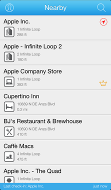

Every tap counts
A quicker way to check in on foursquare with iPhone.

The quicksquare location list also provides indications for your mayorships and available specials. Awarded specials and special details are also available.
A foursquare account
is required.
Icon and other pixels by Andrew Reifman
